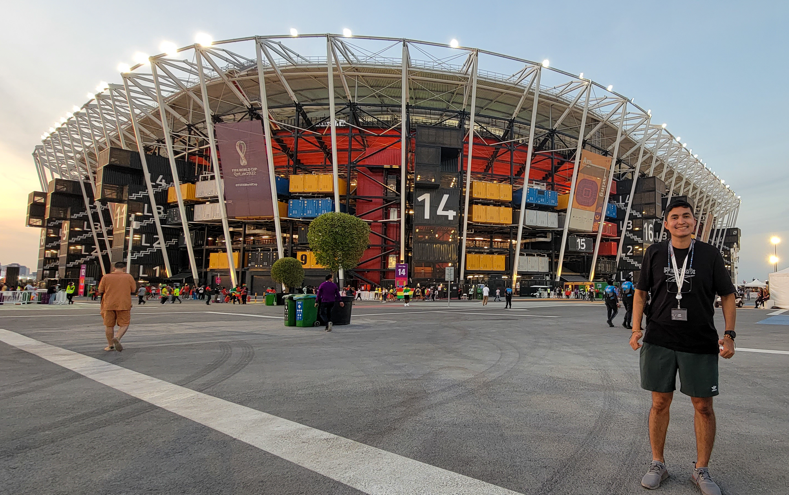
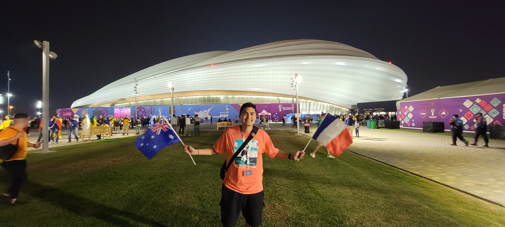
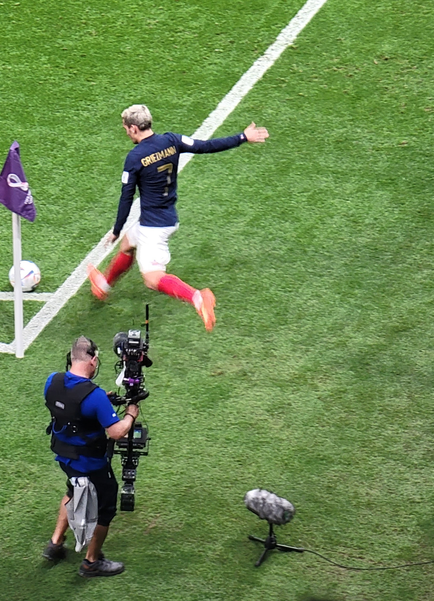
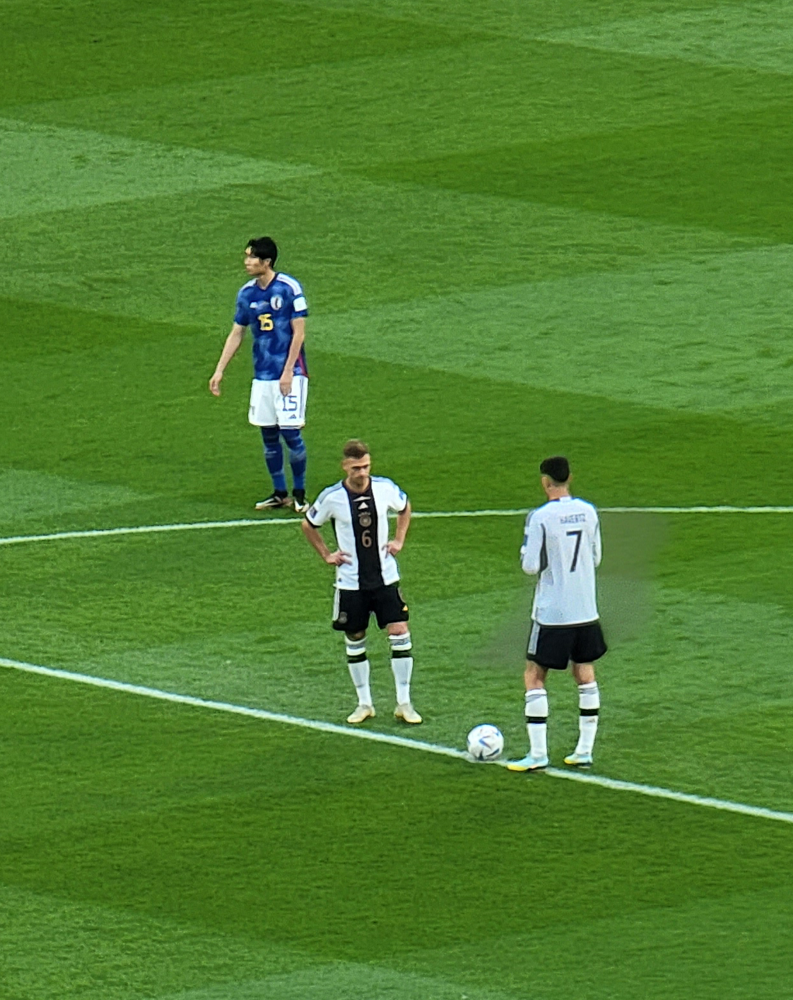
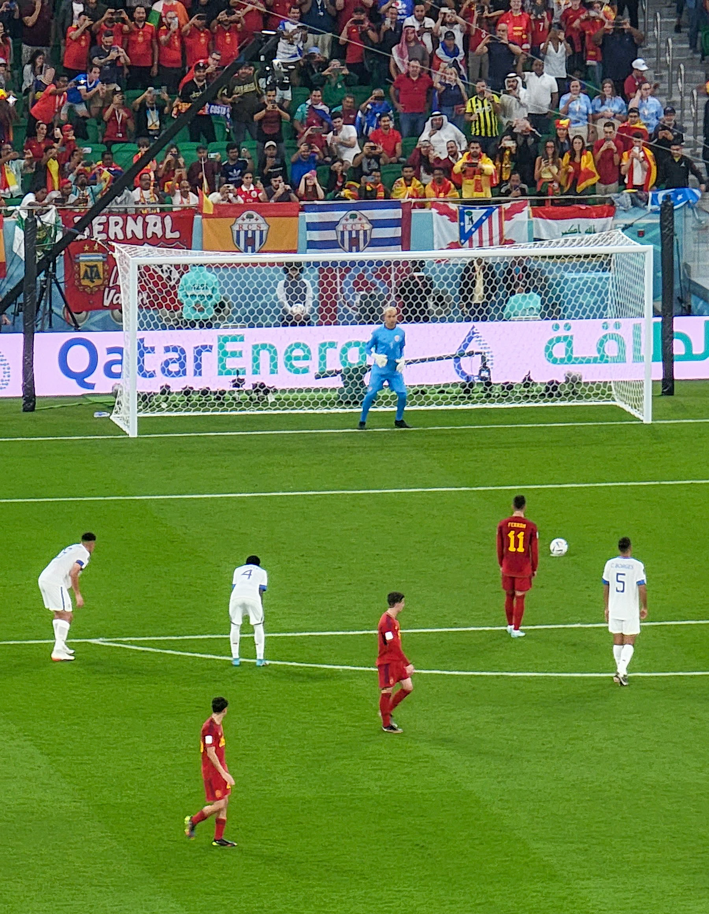
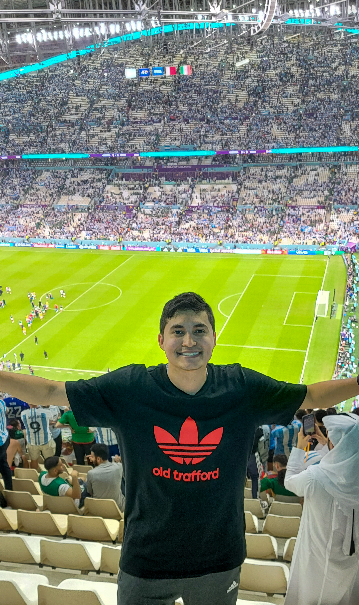
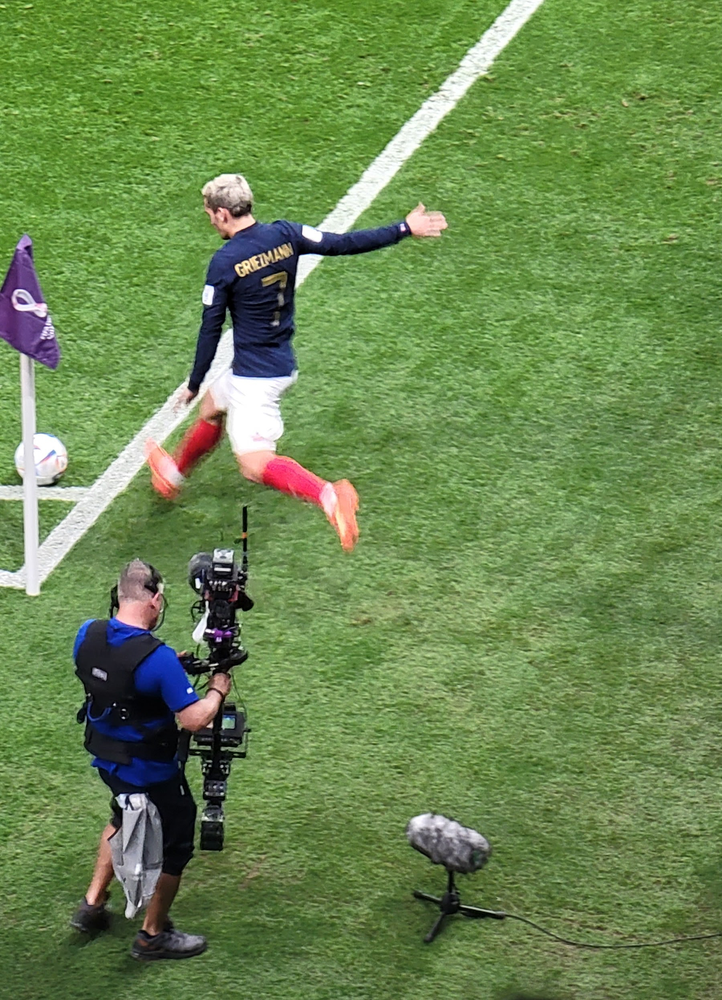
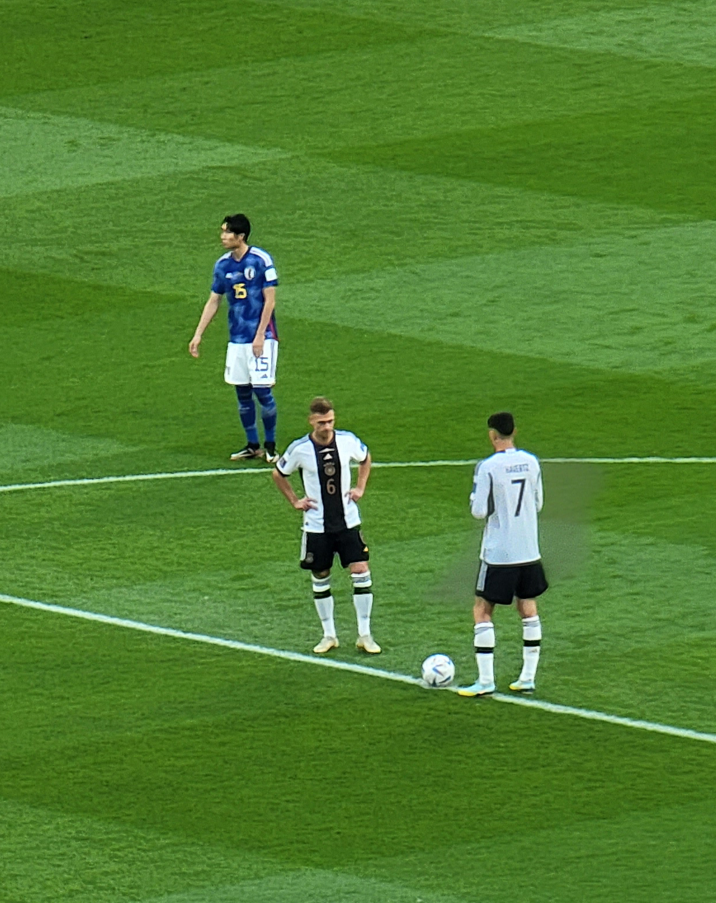
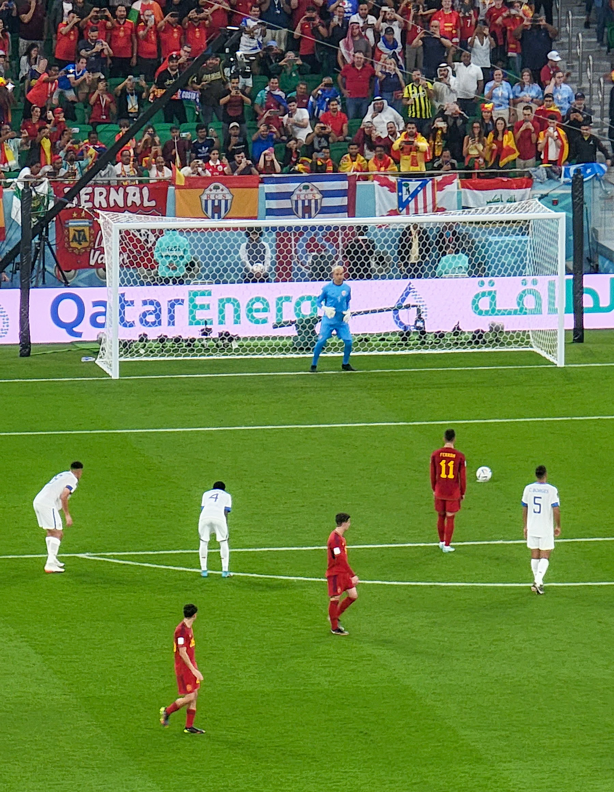
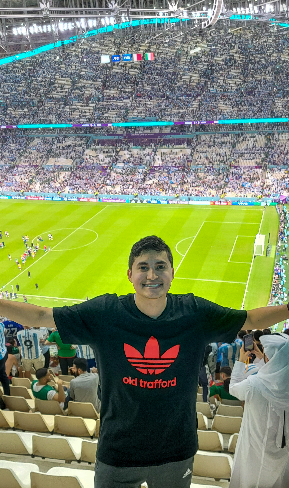

Intro
The World Cup Qatar 2022 group phase was marked by intense competition, unexpected upsets, and stellar performances from both traditional powerhouses and emerging football nations. The draw for the group stage set the stage for thrilling matchups, with fans eagerly anticipating clashes between some of the world's best teams. Group A saw host nation Qatar deliver a commendable performance, securing their spot in the knockout stage with flair. The surprise package of the tournament, a resilient underdog from Group B, caused a stir by defeating established contenders and advancing further than many had predicted. Group C was a tightly contested battle, with several matches ending in dramatic fashion and showcasing the tournament's competitive spirit.
In Group D, defending champions faced stiff competition from determined challengers, creating an atmosphere of uncertainty as teams fought tooth and nail for progression. Group E featured a mix of seasoned veterans and rising stars, resulting in a captivating blend of skill and tenacity on the pitch. The drama unfolded in Group F, where the race for the top spot went down to the wire, and the outcome kept fans on the edge of their seats. Overall, the group phase of the World Cup Qatar 2022 provided football enthusiasts with a spectacle to remember, as both established football giants and emerging talents left their mark on the world's grandest stage.


What's to come?
As the group stage of the FIFA World Cup Qatar 2022 concludes, fans worldwide eagerly anticipate the heightened drama and intensity that the knockout stage promises. With the top 16 teams now set to face off in sudden-death matches, the stakes are higher than ever. The knockout stage not only showcases the individual brilliance of players but also tests the strategic acumen of coaching staff, as teams vie for the tactical edge that could secure their path to the quarterfinals.
In this phase, traditional football powerhouses will clash with underdog stories, creating a dynamic mix of matchups that captivate fans. With the single-elimination format, each match becomes a do-or-die scenario, adding an extra layer of excitement and tension. As the tournament progresses, the pressure mounts, and the emotional rollercoaster for both players and fans reaches its zenith. The global audience is set for an electric atmosphere, with discussions, debates, and the sharing of memorable moments amplifying the sense of unity and camaraderie among football enthusiasts.
Beyond the on-field action, the knockout stage is a time for football fans to come together, celebrate victories, and share in the collective experience of the tournament. Social media platforms will buzz with analyses, reactions, and the celebration of exceptional plays. As the Round of 16 kicks off, the FIFA World Cup Qatar 2022 enters a crucial phase where heroes will emerge, dreams will be shattered, and the beautiful game will continue to capture the hearts of millions around the globe.

 






